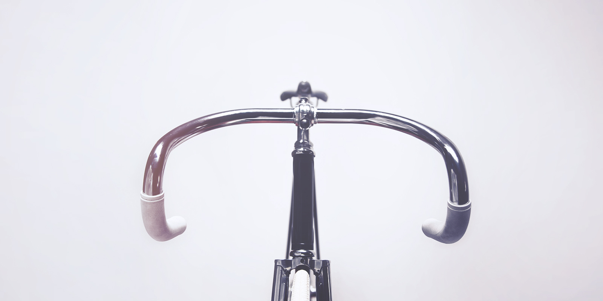

A new generation of vintage bike
Vintage bikes, especially steel racing and track bikes, have always had their fans and collectors. In the 2000's, a new generation of riders have also taken interest in owning, collecting and in the best case, riding these beautiful machines as an everyday commute or in events like L´Eroica or Tweed Rides. If you consider buying a vintage racer for yourself, make sure you are spending your money on the right one.

Vintage Oliva
Some collectors favour nothing but handcrafted bikes that were manufactured only by the dozens to low hundreds. Bikes made by the master builders like Ugo De Rosa, Faliero Masi and Ernesto Colnago are some of the most sought after in the world.

La Boriosa
Some collectors favour nothing but handcrafted bikes that were manufactured only by the dozens to low hundreds. Bikes made by the master builders like Ugo De Rosa, Faliero Masi and Ernesto Colnago are some of the most sought after in the world.

Retro Bike - M. Hulot
Some collectors favour nothing but handcrafted bikes that were manufactured only by the dozens to low hundreds. Bikes made by the master builders like Ugo De Rosa, Faliero Masi and Ernesto Colnago are some of the most sought after in the world.